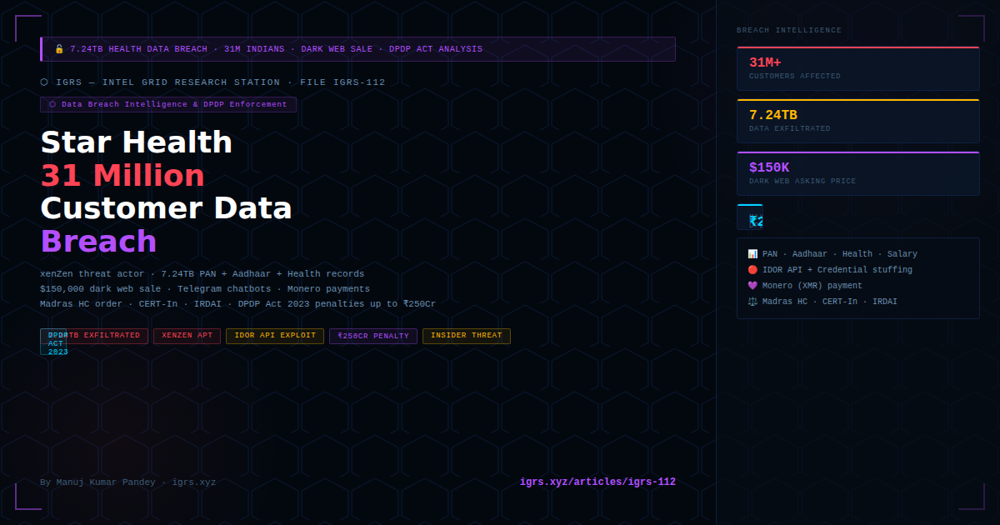

⚠ Note: This analysis is based entirely on public disclosures — Star Health official statements, Madras HC orders, CloudSEK threat intelligence report, Reuters investigation, and Business Today reporting. No confidential data is referenced.
In September–October 2024, India witnessed its largest health insurance data breach — 7.24 terabytes of sensitive data covering over 31 million Star Health Insurance customers was leaked, offered for sale on the dark web, and disseminated via Telegram bots. The breach exposed names, PAN numbers, Aadhaar details, medical records, salary, and policy information — and introduced a new threat vector to Indian cybersecurity discourse: the alleged insider sale of data by a company's own CISO.
This article provides a complete forensic breakdown of the breach, the threat actor profile, the legal response, and the implications for data breach investigations under India's emerging DPDP Act 2023 framework.
| Date | Event |
|---|---|
| 26 Jul 2024 | xenZen allegedly contacts Star Health CISO via Tox (encrypted messenger) — alleged negotiation begins |
| Aug 2024 | xenZen registers dedicated breach website (behind Cloudflare) |
| 20 Sep 2024 | CloudSEK's XVigil platform discovers xenZen selling 7TB data from Star Health on dark web |
| Sep 2024 | Star Health acknowledges "targeted malicious cyberattack" — launches forensic investigation |
| Oct 9, 2024 | Security researcher Deedy Das tweets about breach — goes viral. xenZen activates two Telegram chatbots distributing 100K-record samples |
| Oct 10, 2024 | Star Health files lawsuit against Telegram + unknown hacker. Madras HC orders all third parties to disable access to compromised data |
| Oct 12, 2024 | Star Health confirms: criminals demanded $68,000 ransom. Full dataset offered at $150,000; bundles of 100K records at $10,000 |
| Oct 2024 | Reuters retrieves 1,500+ files (7.24TB) via Telegram bots — including government officials' data. Star Health shares drop 2.5% |
| Data Category | Sensitivity | Records |
|---|---|---|
| Names, DOB, mobile, email, address | Personal PII | 31M+ |
| PAN card numbers | Financial identifier | 31M+ |
| Aadhaar card details | Government ID — critical | 31M+ |
| Salary information | Financial PII | 31M+ |
| Health conditions, medical records | Sensitive health data — highest risk | 31M+ |
| Insurance policy details, health card | Financial + health | 31M+ |
| Insurance claims data | Sensitive health + financial | ~6M |
| Government officials' records | Critical — national security risk | Subset |
Critical risk: Combination of PAN + Aadhaar + health condition + salary = complete identity profile enabling KYC fraud, loan fraud, targeted phishing, and medical blackmail. This is the most dangerous data combination possible for Indian consumers.
xenZen is described by CloudSEK as a threat actor "notorious for targeting Indian organisations" with possible geopolitical motivations beyond financial gain. Key TTPs identified:
| TTP | Detail |
|---|---|
| Initial access vector | Credential compromise (stolen/weak credentials from dark web) + web API vulnerability exploitation (IDOR/URL manipulation) |
| Monetisation strategy | Tiered pricing: full dataset ($150K) + sample bundles (100K records = $10K) + ransom demand ($68K) |
| Dissemination | Dedicated breach website + 2 Telegram chatbots for self-serve sample retrieval |
| Information warfare | Fabricated CISO collusion narrative + forged conversation screenshots — designed to maximise reputational damage |
| Payment method | Monero (XMR) — privacy coin, significantly harder to trace than Bitcoin/ETH |
| OPSEC | Tox for initial contact, Cloudflare-protected website, Telegram for distribution |
CloudSEK assessment: While the leaked data is authentic (high confidence), the CISO insider collusion claim is "highly unlikely and fabricated" — a deliberate information warfare tactic. The CISO was cleared in Star Health's internal investigation.
The technical attack chain, based on public disclosures, involved three stages:
Attackers sourced valid credentials from the dark web — likely from prior credential stuffing attacks or phishing campaigns against Star Health employees. These credentials provided initial authenticated access to internal systems.
Once authenticated, attackers exploited Insecure Direct Object Reference (IDOR) vulnerabilities in Star Health's web APIs — manipulating URL parameters or query strings to access records beyond their authorisation level. This is a textbook OWASP Top 10 vulnerability (A01: Broken Access Control).
The API vulnerability allowed automated enumeration and bulk extraction of 31M+ records. The 7.24TB exfiltration indicates a sustained extraction window — Star Health's monitoring systems failed to detect anomalous bulk API queries.
| Legal Action | Detail |
|---|---|
| Madras HC order | Directed all third parties, hosting providers, social media, and messaging platforms to disable access to compromised data |
| Criminal complaint | Filed against xenZen and Telegram |
| Lawsuit vs Telegram | Telegram initially complied, then bots reappeared — ongoing enforcement challenge |
| CERT-In involvement | Coordinating with Star Health per mandatory breach reporting obligations |
| IRDAI | Insurance regulator engaged — insurance data breach = IRDAI jurisdiction |
India's Digital Personal Data Protection Act 2023, when fully operationalised, fundamentally changes the legal landscape for data breaches of this nature:
| DPDP Act Provision | Application to Star Health Breach |
|---|---|
| S.8 — Data Fiduciary obligations | Star Health = Data Fiduciary. Must implement technical + organisational measures to prevent breach. Failure = primary liability. |
| S.8(6) — Breach notification | Data Fiduciary must notify Data Protection Board AND affected data principals upon breach — prescribed timeframe to be notified via rules |
| S.9 — Sensitive data (health) | Health data = special category — highest protection standard required. Medical records breach = maximum penalty exposure |
| S.33(1) — Penalties for fiduciary | Failure to implement adequate safeguards: up to ₹250 crore per breach |
| S.33(2) — Failure to notify Board | Failure to notify breach: up to ₹200 crore |
| Data Protection Board | Adjudicatory authority — investigations, penalties, directions |
Investigator's note: Under DPDP Act, breach investigations will generate standardised evidence — Board inquiry records, fiduciary's breach notification, technical audit reports. These will be admissible in civil and criminal proceedings and significantly improve evidence quality vs. current ad hoc investigations.
| Step | Action | Legal Instrument |
|---|---|---|
| 1. Preserve | Forensic image of server logs, API gateway logs, SIEM alerts, access logs from breach window | S.63 BSA 2023 certificate required for all electronic evidence |
| 2. Identify exfil window | Correlate API query logs for anomalous bulk enumeration — timestamp, source IP, volume, endpoint pattern | S.94 BNSS to cloud/hosting provider for raw logs |
| 3. Trace threat actor | Tox messenger = near-impossible to trace. Dark web site via Cloudflare = legal request to Cloudflare for origin IP. Telegram bots = S.94 BNSS to Telegram India or MLAT via CBI | MLAT via CBI for foreign platforms |
| 4. Monero trace | XMR is privacy coin — trace via exchange KYC if cash-out attempted on Indian exchange. CERT-In + FIU coordination | S.94 BNSS to exchange; PMLA S.3/4 |
| 5. Insider investigation | If insider threat: forensic analysis of CISO/employee devices, email, access logs, communication apps (Tox). Timeline correlation. | S.94 BNSS + device seizure warrant |
| 6. CERT-In coordination | Mandatory for all cyber incidents per CERT-In directions 2022 — 6-hour reporting window for critical sectors | CERT-In Directions 2022 |
| 7. DPDP Board notification | Data Fiduciary must notify Board — investigators can request Board inquiry records as evidence | DPDP Act 2023 S.8(6) |